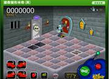
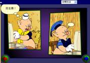
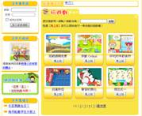
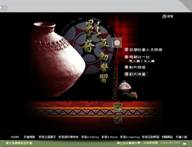
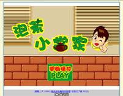
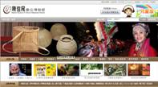
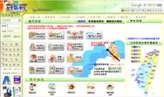
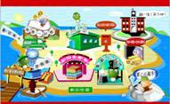
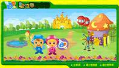
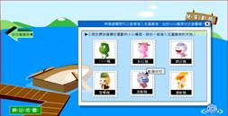

1.將所有網站的優點整理集中成一個我們網站製作的規格表
(現在還看不出來我們網站的樣子，太過抽象，要具體一點)
2.整理成規格表後，在思考如何加入"創意點"與"互動科技"
完成後，網站便呼之欲出了
1.網站優缺點分析(佳樺)
2.創新科技補上禮拜(佳樺&煥鈞)
3.本週創新科技(孟宜&雅雯)
4.論文修改(佳樺&雅雯)
5.Web Tea 網站應用(加圖)(孟宜)
6.網站優缺點分析 Part 2 (逸賢&煥鈞)
7.彙編(佳樺)
一.論文連結
二.網站型式參考資料
網頁 |
優點 |
建議修改加強 |
創意點 |
1.網頁的按鈕有聲音提示 2.以搭火車的方是環繞全台來進行遊戲 3.遊戲中每過完一關給予玩家適當的回饋 4.遊戲到達每一個關卡會依據其地方特色進行問答 5.提供電子卡片的寄送 |
1.沒有給予使用者事先學習的機會 2.遊戲整體美觀可再改進 3.在遊戲進行中無法回主畫面，只能回上一頁在重新來過 |
1.以搭火車的方是環繞全台來進行遊戲 2.遊戲過關回饋是以進化的方式來呈現 3.電子卡片的寄送服務 |
|
 |
1.開始遊戲時玩家可先了解奇故事大綱與遊戲規則 2.屬於邏輯性遊戲 |
|
1.遊戲具有故事性，有前因後果 2.邏輯性的遊戲可增加玩家對其的興趣 |
 |
1.運用童話故事來吸引瀏覽者觀看，並且改編其故事加入欲宣導的事情，使瀏覽者提升學習興趣 2.每個對話間有停頓(需靠按按鈕進行下一段)讓瀏覽者有時間閱讀 3.背景音效搭配得當 |
1.畫面過小 2.如果人物對話可搭配聲音，會增加其豐富性 |
1.改編學習者熟悉的故事，加入欲宣導的事情，引起學習者的注意 2.以故事性的方式，加上問答題，使學習者提高學習興趣 |
 |
1.此學習網提供許多教學，無論是動畫或遊戲，整體感十分一致與美觀 2.無須登入也可以進行學習 3.提供資料庫的查詢 4.提供各式各樣的下載服務(著色卡、卡片、桌布等) 5.提供留言板的功能 6.遊戲(左下圖)中每過一關即可玩一個小遊戲 7.遊戲(左下圖)每個按鈕都有人聲輔助，並在選擇錯誤時給予正確的答案 |
1.如果是在經過學習後再進行遊戲，是否會較好? | 1.此學習網的遊戲都十分有趣，製作時可參考 2.遊戲(左下圖)以翻排的遊戲進行改編，使它變成另一種形式來遊戲(聽聲音)，十分特別 3.提供各種下載服務(給予網頁加值) 4.提供留言版的功能 |
 |
1.互動遊戲以影片問答形式 2.遊戲問答以回答到對為止 3.在問答中答對時，給予詳細的解答，並且可連結出去了解更多豐富的相關資料(台灣人文社會問答) 4.提供資料庫搜索 5.相關資料內容豐富，並有影片可欣賞 |
1.影片問答遊戲中，答錯題數應該給予上限 2.整個網站只給予遊戲來進行互動式學習，應給予瀏覽者先學習的機會，再進行遊戲 3.相關資料如果沒有經過遊戲，根本就不知道可以連結到如此豐富的相關網頁進行學習 4.沒注意根本不知道有下排按鈕的存在 |
1.互動式遊戲也可嵌入影片進行學習(類似大家來找碴) 2.提供相關網站的資訊 |
 |
利用動畫教導瀏覽者泡茶的順序 |
現今的網站上尚未看到很多類似的茶文化動畫教學 |
利用動畫來進行教學，但是故事可經過再發想，不一定要如此死板 |
 |
1.介紹原住民的網頁，依據使用者的年齡，製作出兩種版本(一般版與兒童版)，介面十分地不同 2.在聲原族樂的網站中，有很多圖形化介面配合互動 3.每個原住民的Q版造型十分有其特色 4.台灣原住民數位博物館有提供動畫(3D)影片 5.台灣原住民數位博物館內資源豐富，而且還是有互動性的遊戲，跟兒童版的遊戲又不一樣 6.台灣原住民數位博物館內提供線上演講廳的服務 7.台灣原住民數位博物館內提供線上Q&A服務 8.提供電子報的服務 9.提供多種語言的服務(中文、日文、簡體、英文) 10.提供資料庫搜尋 11.提供字級的縮放與資料列印 12.附加價值(電子賀卡、螢幕保護程式) |
一般版的許多連結都可以連到兒童版，網頁有點混亂 |
1.提供線上演講廳的服務 2.供線上Q&A服務，讓學習者在學習過程中有發問的機會 3.提供影音服務 4.提供電子報的服務 5.提供字級的縮放(有些使用者喜歡看小字，有些使用者喜歡看大字)，使用者可根據其習慣改變字級 6.附加價值(電子賀卡、螢幕保護程式) |
1.提供資料庫查詢資訊 2.如果登入會員的話，可以記錄你的學習過程與分享，沒登入會員的話也可以加以學習 3.學習完一個課程會有小測驗 4.課程學習是選單式，依據學習者的需求進行教學 5.教學內容雖然都是客語教學，但是顯示出來的畫面是中文，可以讓學習者邊聽邊試著了解，呈現的方式也是動畫為主 6.整個網站呈現出的感覺比較活潑無年齡之分 7.可依使用者的喜好，改變介面主要顏色 8.提供電子報、圖鈴下載、MSN大頭貼、電子賀卡下載 9.可進行即時傳訊 |
1.上課視窗可再作修改，左邊的選單可再做美編 2.彈出視窗易被阻攔 |
1.網站提供聊天室、討論區以及經驗分享，讓學員彼此之間產生互動，亦可讓學習者與製作者產生互動 2.每學習完一個課程給予適當的測驗(遊戲) 3.使用者可根據其喜好，變更介面主要顏色 4.提供明確的軟、硬體需求告知(作業系統：Window2000／XP皆可、瀏覽器：IE6.0sp1（本系統不支援Netscap、 KKman等瀏覽器）、Flash Player 8.0／9.0) 5.提供RSS 訂閱 6.提供電子報、圖鈴下載、MSN大頭貼、電子賀卡下載 |
|
 |
1.提供線上投票等交流互動 2.提供使用者醫療諮詢 3.提供資料庫檢索 4.有些課程上完可得教育積分或是學分(根據使用者身分) 5.提供Google資料查詢 6.課程以圖形化呈現 |
1.但是有關教學的部分，需要登入才可學習 2.有些視窗不需再另開網頁 3.網頁廣告連結圖太多 |
1.提供Google資料查詢 2.提供資料檢索 3.以圖形化介面呈現 |
1.網站中的用詞與想法叫符合年輕人思想(較KUSO) 2.遊戲的方式不會很死板，很有趣 |
|
雖然它不是個教學網頁，但或許我們可以利用它遊戲有趣的地方，融入教學 |


網頁 |
優點 |
建議修改加強 |
創意點 |
 |
1.提供小朋友遊戲學習平台 2.提供圖文並茂的說明，增加理解度 3.提供角色故事情境，引導瀏覽 4.首頁選單圖像活潑令人喜愛 5.提供遊戲下載 |
1.不一樣的連結畫面按鈕不同，部分太複雜。 2.不同連結減少其頁面差別度太大。 |
1.多一些角色包裝網站的感覺就不一樣 2.角色故事情境 3.以圖形化介面呈現 |
 |
1.提供各類幼教親子資訊 2.提供會員登入之學習福利 3.圖形化介面學習 |
1.僅是分類學習連結
|
營造一個學習的環境，但類似的網站已很普遍 |
1.圖文並茂豐富的知識學習網站 2.適時表現一些動畫，還有提供遊戲 3.入圍第六屆時報金手指網站獎 4.畫面清晰一目瞭然 |
|
1.透過角色扮演讓小朋友認識能源與節約能源 |
網頁 |
優點 |
建議修改加強 |
創意點 |
| 1.Chic Tea(互動式首頁) |
1.版面隨著選擇動態按鈕的顏色而改變版面顏色.
|
1.只改版面但內容沒變 |
1.版面顏色隨茶種類不同而顏色不同 |
2.一保堂茶舖 (以圖為網站的互動式教學) |
1.動態首頁 2.具極高的互動性學習 3.以圖畫方式呈現整個茶網站及用圖畫的方式呈現茶圖鑑 |
1.單一語言,建議雙語言變換 |
1.以圖畫的方式呈現整個網站內容及圖片 |
3.兒童數位博物館 (單機版)(數位學習互動式遊戲) |
1.動態首頁,以”島”的方式來分類特別且明確 2.大分類完後點進去還有小分類 3.可選擇學習或遊戲 4.由影片,圖片附註文字或電子書做學習 5.遊戲跟學習有相關聯 6.附有教案,學習單可供老師及學生下載 7.提供週邊桌布下載 8.音樂歌謠可線上聆聽,附有歌詞並會隨著歌詞標示歌詞 |
1.單機版也可創故事,由角色串起來 |
1.一步驟一步驟互動式學習很完整,內容豐富且多樣 |
4.Tea is Good (Calm-a-Sutra 2008) (動畫影片) |
1.4種不同的疾病由4種不同的茶可以預防 |
1.前面動畫都沒提及4種不同的病 |
1.由疾病來對找茶種類並用動畫來呈現 |


三.網站製作規格表
Tea Web 網站製作的規格表
其他網站的創意發想與優點 |
|
優點 |
創意發想 |
|
|
Tea Web的創意發想與優點 |
|
優點 |
創意發想 |
|
|
三.網站優點應用說明
Web Tea 網站優點應用說明
網站 |
遊戲 |
影音動畫 |
1.網頁的按鈕有聲音提示並且是圖形化介面 2.提供電子卡片的寄送(保留) 1.整體感一致 2.提供會員服務 1.提供資料庫的查詢 1.提供加值服務 (著色卡.桌布.幕保護程式等) 1.提供留言板(會員) 1.相關資料內容豐富， 並有影片可欣賞(保留) 2.提供不同使用者不同的介面 (保留) 1.沒登入會員的話也可以加以學習 2.課程學習是選單式，依據學習者的需求進行教學 3.提供相關網站的資訊 4.提供明確的軟、硬體需求告知(作業系統：Window2000／XP皆可、瀏覽器：IE6.0sp1（本系統不支援Netscap、 KKman等瀏覽器）、Flash Player 8.0／9.0)
| 1.遊戲中每過完一關給予玩家適當的回饋 2.遊戲到達每一個關卡會依據其地方特色進行問答或學習 1.開始遊戲時玩家可先了解其故事大綱與遊戲規則 1.適當的背景音效搭配 2.遊戲中每過一關(問答)即可玩一個小遊戲(保留) 1.問答選擇錯誤時給予正確的答案 2.進入選單可以讓使用者與學習者選擇要進入學習單或進入遊戲 兒童數位博物館(單機版) |
1.動畫中的每個對話間有停頓 (需靠按按鈕進行下一段) 讓瀏覽者有時間閱讀 1.適當的背景音效搭配 2.利用動畫教導瀏覽者泡茶 一保堂茶舖 1.提供動畫(3D)影片(保留) |


Web Tea 網站創意發想應用說明
網站 |
遊戲 |
影音動畫 |
1.提供加值服務(著色卡->可另存圖片變成桌布) 2.提供電子報服務 1.提供字級的縮放與資料列印 1.可依使用者的喜好，改變介面主要顏色 1.可進行即時傳訊(學員V.S.學員互動)(保留) 2.加入Google Map or UrMap 3.網站中的用詞與想法叫符合年輕人思想(較KUSO) KUSO PARTY 1.提供角色故事情境，引導瀏覽 1.提供RSS 訂閱 1.多一些角色包裝網站  1.點選茶館的不同樓層有更深入的說明 1.製作茶的圖鑑表 1.教學以電子書的方式呈現
1.附有學習單與評量 |
1.設計邏輯性遊戲
1.以搭火車的方式環繞全台認識茶文化 (保留) 1.遊戲過關回饋是以進化的方式來呈現 (保留) 1.互動式遊戲也可嵌入影片進行學習 (類似大家來找碴) (保留) |
1.改編瀏覽者熟悉的故事
迪士尼 網路禮儀動畫 1.互動遊戲以影片問答形式 1.音樂歌詞的同步播放(保留) 兒童數位博物館(單機版) |


1.Google應用程式也加入支援Google Latitude (縱橫)

Google剛宣布兩個新的應用程式支援自家的Google Latitude服務，雖然不見得每個人都會想讓朋友知道自己在哪裡。
第一個是自家IM程式，Google Talk，每次你更新你的Latitude，就將會把你的地點更新到你的狀態上（到城市等級）。另一標
章（badge，如圖），你可以貼在你的部落格上或者是社群檔案上，顯示你在那裡。
就像內嵌一個Google Map一樣，你可以設定地圖型態和顯示尺寸等級，然後它會回傳一些程式碼，包括一個連回Google Latitude的連結。
Google承諾會有更多Latitude的應用，Yahoo在這方面有另外一種作法，是透過Facebook來開發應用程式Friends on Fire，
可以讓使用者和他們Facebook上的好友分享他們所在的地點。
資料來源：http://taiwan.cnet.com/crave/0,2000088746,20138036,00.htm
2.路人甲乙丙丁方便「戴」著走的衛星導航～【找路腕套】
來自中國產品設計師的概念創意作品「This Way Glove」【找路腕套】，是用來幫助一些看不懂、懶得看、不想
看地圖找路的行人，將導航系統戴在手腕上，輕輕鬆鬆看著雷射指示箭頭，向左向右、走向康莊大道去.....
這項獲得德國的紅點設計獎項（Red Dot Design Award）肯定的創意設計，主要是將現在車子上使用的導航系統，
嵌入在【找路腕套】中，讓一般路人甲乙丙丁都可以戴在手腕上，快速找到目的地。
資料來源：http://8jliving.com/node/852
較大版Kindle搶入校園教科書市場

螢幕更大的新版Kindle名為Kindle DX，是專為閱讀報紙、雜誌和教科書所設計，並
且訂於今秋參與美國六所大學進行的新電子教材測試。
教科書電子化是非常有益的作法.
這應該是Kindle這類電子閱讀器的理想市場。
但客觀條件的優勢，不代表美國的大學生將立刻人手一支Kindle。Forrester Research媒體分析師Sarah Epps表示：
「我確實認為教科書市場會是電子閱讀器的殺手應用領域。（但）我們認為要到2011年才開始發展，並在
2013年真正起飛……我們訪問過出版商、大學，我們發現出版商方面還有一點遲疑。」
Epps指出，出版界對電子書還有很多疑慮，最大的擔憂是紙本教科書的利潤將被侵蝕。還有內容授權和Google問題。最近連圖書館業組織也對Google提出告訴。
新版Kindle在美國以外的市場也有龐大潛力。Epps推測該產品在中國和印度等大學生更買不起昂貴教科書的國家，或
可形成風潮。Epps說：「在大學裡用電子閱讀器看教科書，對學生來說是無比的便利，但那需要一些時間發展。」
新版Kindle在教育出版和學術界的迴響，勢必將勝過原版的Kindle和今年稍早上市的Kindle 2
螢幕加大的Kindle能否如眾所預期的，拿下印刷期刊的市場。謠傳紐約時報將參與6日的新版Kindle發表會，屆
時可能宣佈對Kindle訂戶降價。但這個模式無法即使挽救面臨存亡危機的報紙和雜誌出版業。
資料來源：http://taiwan.cnet.com/crave/0,2000088746,20138043,00.htm
彙編=>佳樺
網站型式參考資料=>孟宜,雅雯,佳樺
網站應用=>孟宜
創新應用科技=>雅雯,孟宜
論文=>逸賢.佳樺.雅雯